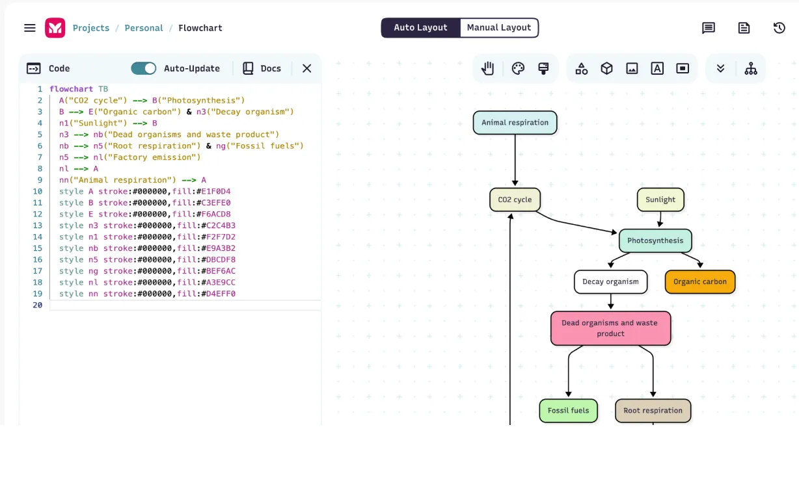
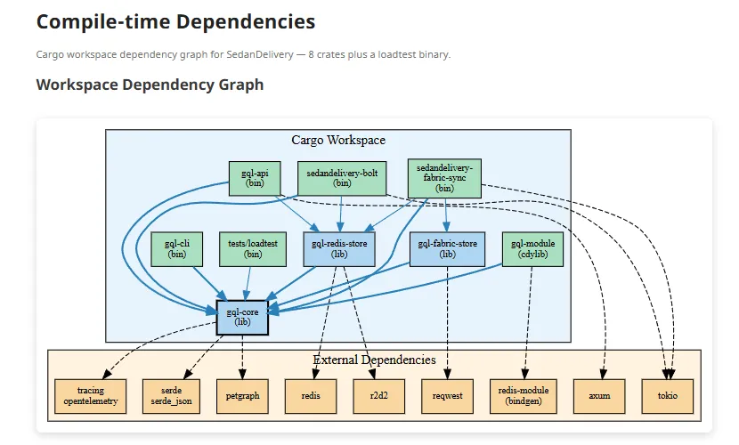

Forcing LLMs to think in graphs for bug hunting in large codebases
Ryan Sweet · March 2026
Building docs for user-data flows kept turning up bugs that were buried deep (e.g. silently trimming an array to one element in a return).
Asking questions like "look for more bugs of this type" led to the LLM looking at adjacent categories altogether.

| Repo | Shared | Mermaid-only | Graphviz-only |
|---|---|---|---|
| amplihack-memory-lib | ✓ | ✓ | ✓ |
| amplihack-recipe-runner | — | — | — |
| amplihack-xpia-defender | — | — | — |
| amplihack-agent-eval | — | — | — |
| amplihack (main) | ✓ | — | ✓ |
By making diagrams of the code from different points of view it helps create good docs.
